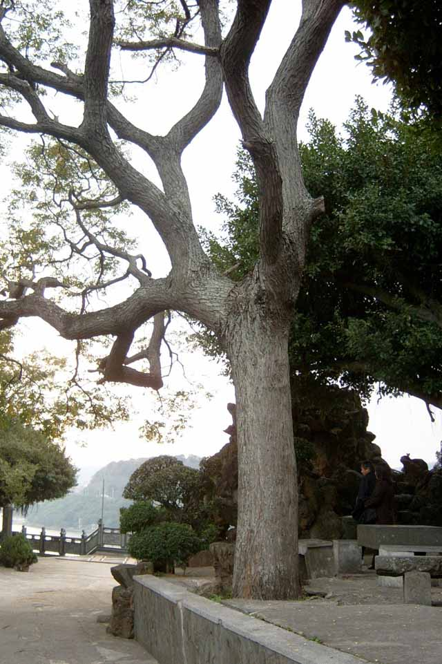
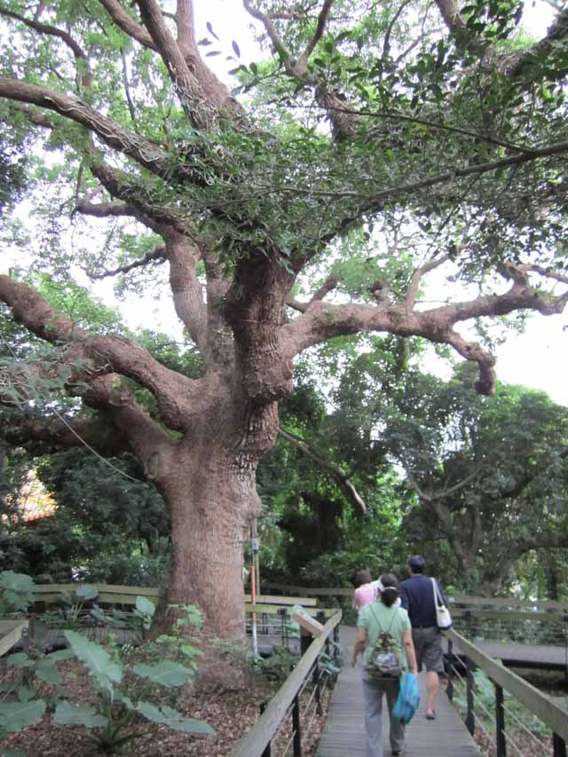
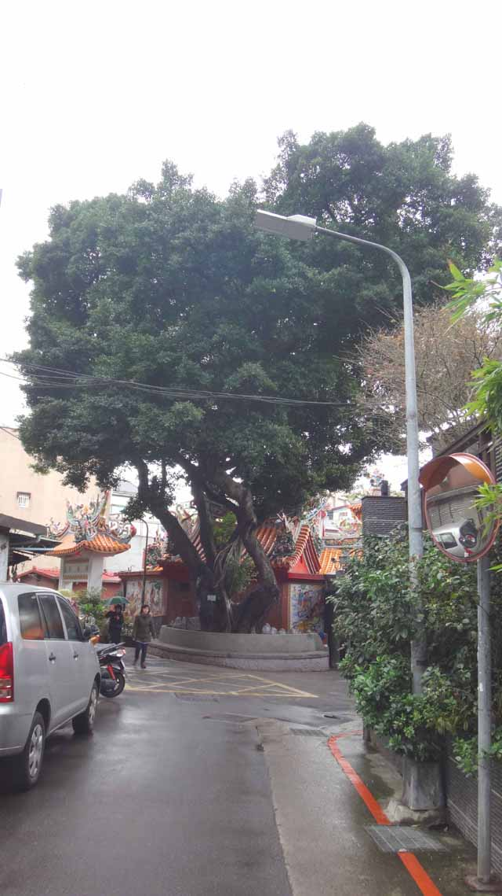
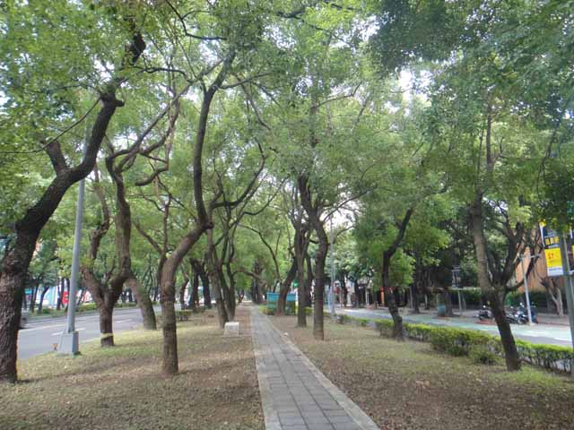
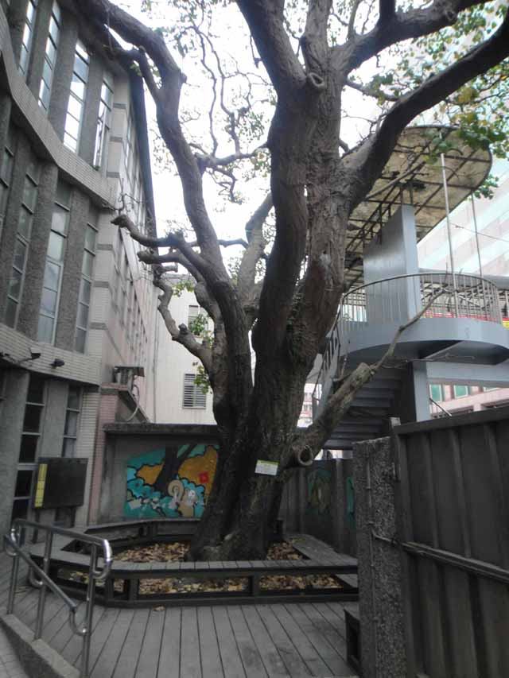

達人的旅遊新觀點


土地倫理協會祕書長、有意見的教室工作坊負責人、新莊永續觀光發展產業聯盟召集人。

大樹豐富城市的風貌，也讓市民有更貼近自然的生活機緣。
走逛城市風景，佇足在有故事、有生態、人文背景的大樹旁，或可以激起城市自然生命的想像趣味。這裡，就分享幾個藏身大台北都會中的大樹及景區，這些大樹有些具人文特色，有些具野地棲地生態意含……
●第一站 關渡後山的苦楝樹
來到關渡宮後山，可以看到若干株碩大的苦楝樹，這在台北是較少看到的景象。苦楝樹經常在河床地及山邊旱地出現，是野地常見植物，但是在台北少有大樹成長，這是因為傳統住民對苦楝不存好感，經常當雜木砍掉；苦楝樹名有「苦」字，不討喜；過年時苦楝葉子落盡，如死樹一般，映襯出年節的不吉祥；民間甚至有「苦楝仔死過年」說法。這些說法對苦楝不公平，苦楝三、四月繁花滿樹非常漂亮。是野地中少見樹形及花形豐富的樹木。這幾年人們對苦楝的印象在改變，有些地區還植栽成行道樹。
●第二站 芝山岩的巨樹們
芝山岩為台北市都會區少數位處水泥樓房間的自然棲地，自然生態多樣豐富，且留存許多大樹。像西隘門大葉楠、惠濟宮前的無患子，以及雨農閱覽室旁的大樟樹，山壁間不時出現的雀榕，都是樹形特別，值得尋訪、逗留及欣賞的老樹。
●第三站 陽明山仰德大道的楓香樹
在陽明山仰德大道260公車總站一直到教師研習中心，有若干棵碩大的楓香。這些樹木是日治時期留下來的。日治時期，許多日人官舍旁習慣植栽楓香樹。陽明山舊稱草山，有日人喜歡的溫泉，是日治時期日人喜歡遊憩的地方，也留下許多株楓香。尤其曾經是日治時期「草山公共浴場」的教師研習中心，門前幾株大楓香就很蒼勁好看。
●第四站 同安街區大樹
同安街兩側巷弄間保留許多特色大樹，有些被土地公廟庇護，有些藏身日治舊房舍裡，或者位在路邊被居民守護著。如晉江街土地公廟的老榕樹，廈門街的大葉雀榕，以及紀州庵邊的榕樹。這些都成為巷弄間、轉角處的綠色景點。
●第五站 客家文代園區的榕樹隧道
客家文化園區早期為交通博物館，交通博物館時代植栽若干大樹，整建客家文化園區時仍保留左側邊緣的榕樹林，此榕樹林間有一步道，走在步道上林木遮天，頗有森林隧道的體會與趣味。
●第六站 敦化北路林蔭大道
早期松山機場為國際機場，台灣往來各國都要從松山機場進出，也促使政府積極營造松山機場的道路交通與景觀。民國五十七年拓寬七十公尺林蔭大道，使和仁愛路相通，林蔭大道上種有樟樹，幾十年來下，樟樹成林，走在林蔭大道上，相對周邊熙攘往來的車流，頗有閒散的逸趣。
●第七站 松山國小的老刺桐
台北野地沒有刺桐樹，存在的刺桐樹都是人們植栽成的大樹。松山國小有一株大台北地區最老的刺桐樹，松山國小創校於1898年，當時即有這株刺桐，可以想見這株樹至少有一百多歲。刺桐為平埔族人鄉土樹，松山國小為平埔族貓里錫口社舊址，此樹在此生長別具意義。
以上大樹景區都是大眾交通路線容易抵達的地點，走讀前若能搜集更多大樹相關背景資料，將更增添尋訪與觀察趣味。